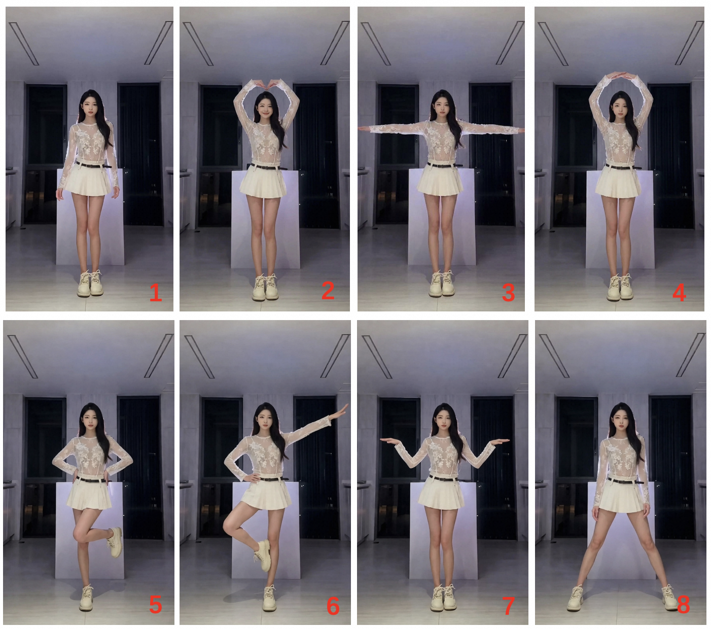

Results
1 Different Dance Genres
1.1 Chinese Classical Dance
Left: reference image. Right: generated dance video.1.2 K-pop Dance
Left: reference image. Right: generated dance video.1.3 Street Dance
Left: reference image. Right: generated dance video.1.4 Tap Dance
Left: reference image. Right: generated dance video.1.5 Latin Dance
Left: reference image. Right: generated dance video.2 Minute-scale Music-to-Dance Video Generation
Left: reference image. Right: generated dance video.
Left video: Generated Latin dance video (duration: 2min8s).
Right video: Generated Chinese classical dance video (duration: 2min41s).
3 Customized Music-to-Dance Video Generation
Our method can generate specific choreographic motions using Low-Rank Adaptation (LoRA).
3.1 Single Music, Multiple References
All videos are generated based on the same music: "Victory Dance".
Left: reference image. Right: generated dance video.
3.2 Single Reference, Multiple Music
The videos below are generated based on the music: "Dao Ma", "Spaghetti", "Miniskirt", "Zoo".
Left: reference image. Right: generated dance video.
4 Diversity
4.1 Single Reference, Multiple Music
Each row displays videos generated from the same reference image with different music.
Left: reference image. Right: generated dance video.
4.2 Single Music, Multiple References
Each row displays videos generated from the same music with different reference images.
Left: reference image. Right: generated dance video.
4.3 Single Music, Single Reference
Each row displays videos generated from the same music and reference image with different seeds.
Left: reference image. Right: generated dance video.
5 Creative Keyframe Applications
Our method supports outfit changes based on keyframes generated in the global stage. Alternatively, users can manually define motion keyframes and leverage the local-stage model to generate dance videos with tightly controlled movements.
5.1 Outfit Change
| Keyframes(Change Outfit) | Generated Video |
|---|---|
 |
5.2 Movements Control
| Keyframes(Change Movement) | Generated Video |
|---|---|
 |
Please note that all aforementioned videos were initially generated by our model and subsequently refined through post-processing.
6 Comparison with the SOTAs
6.1 Comparison with X-Dancer
Left: reference image. Middle: X-Dancer. Right: Ours
BibTeX
@article{wan-dancer-2026,
title={Wan-Dancer: A Hierarchical Framework for Minute-scale Coherent Music-to-Dance Generation},
author={Mingyang Huang, Peng Zhang, Li Hu, Guangyuan Wang, Bang Zhang},
website={https://humanaigc.github.io/wan-dancer/},
url={https://arxiv.org/abs/2607.09581},
year={2026}
}
Ethics Concerns
The images and music used here are for demonstrating our research capabilities and are gathered from public sources or generated by AI models. If you are a copyright holder and have concerns, please reach out to us, and we will duly remove the content.